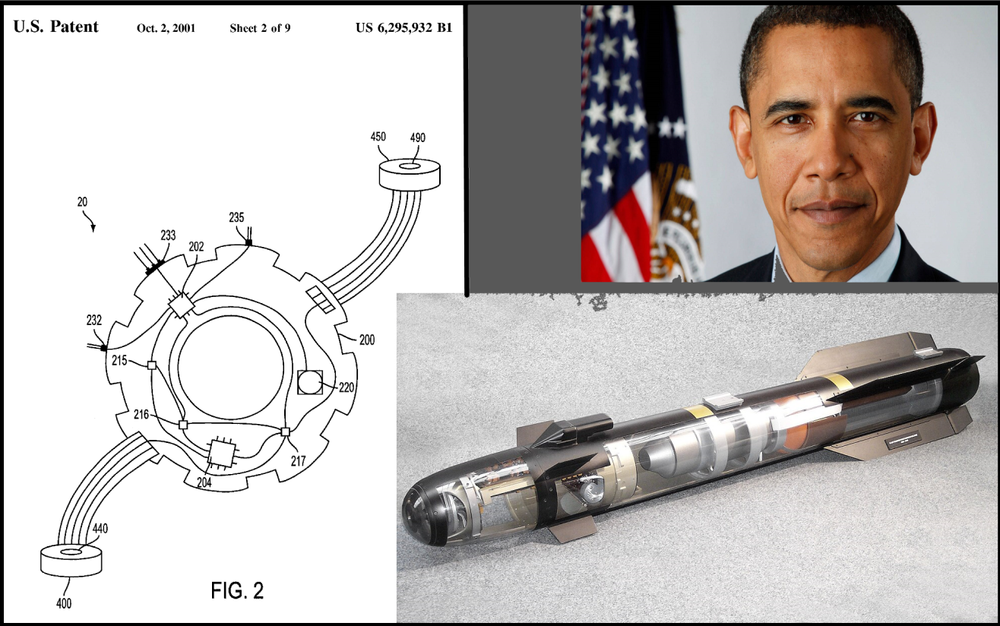

As mentioned in the introduction on the home page, microcontrollers have a wide reaching and highly varied set of uses. If you can think of any process that requires some response to a stimulus or autonomous action by a piece of technology that is too complex for a simple circuit and not large-scale enough to warrant a full computer, a microcontroller is likely used. This is frequently seen with processes like running sensors and processing data from them, sending and receiving simple digital and/or analog signals, taking signals from other microcontrollers or computers and turning them into something usable - anything that seems to be the last mile between the intention of the technology and the real world. Some examples for each of these are the microcontrollers used to process signals in some multimeters, those used in IOT devices, and those used to control navigational systems in missiles. Pictured to the right is the patent for just one of the systems of the Hellfire II missile, employed by the US military for drone strikes presently. Just this one mechanism uses several microcontrollers - it’s a true testament to how ubiquitous they are, and the weapon of choice for former United States president Barack Obama, also pictured to the right.
The microcontroller was developed in the early 70's by Texas Instruments, a few years after Intel had produced the first microproccessor. A microproccesor is a general purpose computer that can execute instructions and perform calculations at a very high level of speed, and with a very wide range of use cases. Their lack of specificity meant that they required a plethora of different components to be used to achieve any actual functionality, and by extension a lot of space, power, and money. For this reason, the microcontroller was introduced, to package computing power into a small and efficient device at the sacrifice of versatility. Ever since then, both devices have remained relevant and useful, and you are likely using multiple of both right now. Some devices you may be using presently that utilize microcontrollers are the mouse you are scrolling with, the keyboard you are typing into, a digital watch you may or may not be wearing, the thermostat controlling the temperature of your room, and perhaps most confusingly your computer itself - while computers are nowadays most commonly assosiated with the microproccesor, these, as mentioned before require a lot of components to see the benefits of their versatility. These components each serve specialized functions, making microcontrollers the perfect solution for their development. Some components that utilize them are optical drives, power supply units, and motherboards. microcontrollers are also used in any digital device that requires basic control, or larger contrutruction that requires specialized functions or sensors. Some regular life examples are a microwave, any remote for a TV or other device, as well as thousands throughout any car or bus you may take. Continuing on, microcontrollers are also used for guidance and control systems in nearly any vehicle or aviation device, unmanned or otherwise. All in all, they've earned their place as one of the most widely used devices worldwide. They've been everywhere for a while and will continue to be so, as evidenced by the grand view research projection shown on the left.